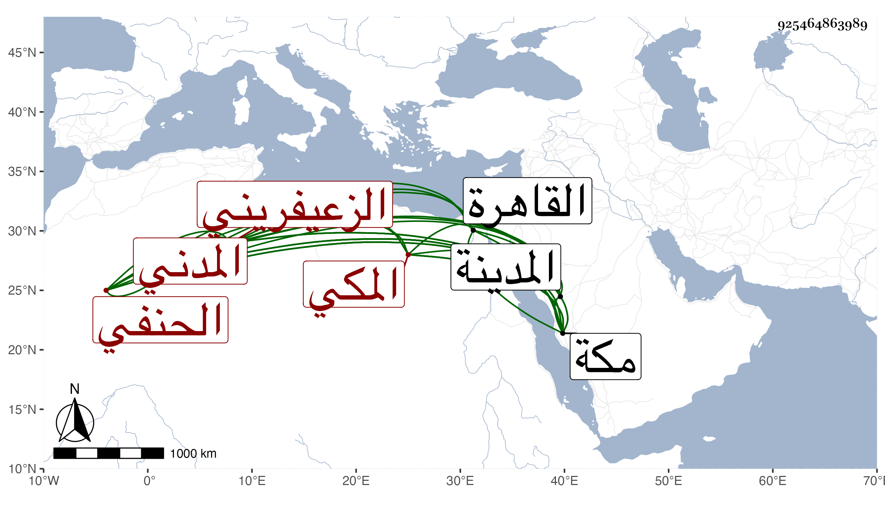

0902Sakhawi.DawLamic.ITO20230111-ara1.EIS1600.925464863989
Biography ID: 925464863989
91
محمد بن محمد بن يوسف بن محمد بن معالي الجمال أو الشمس أبو عبد الله وأبو بكر بن الشمس أبي الفضل الزعيفريني المدني ثم المكي الحنفي الآتي أبوه ولد في ليلة الخميس ثامن ذي الحجة سنة ثمان وخمسين وثمانمائة بالمدينة النبوية وتحول منها وهو ابن خمس مع أبويه إلى مكة فحفظ القرآن ثم المختار والمنتخب في أصول الفقه والفيني الحديث والنحو والفقه الأكبر في أصول الدين وإيساغوجي ، وعرض على البرهاني بن ظهيرة وغيره وقرأ في الابتداء على الزين الهمامي في النحو بل هو الذي حنفه وإلا فإنه ابتدأ شافعيا كسلفه وقرأ في المنهاج إلى شروط الصلاة ثم أخذ النحو بتمامه عن المحيوي عبد القادر المالكي ولازم قاضي الحنفية بمكة ثم ولده في الفقه وكذا قرأ على الفخر عثمان الطرابلسي حين جاور بها وأخذ النحو والأصول وغيرهما عن العلمي المالكي والمختصر عن عبد المحسن الشرواني وعنه أخذ العروض والحساب والأصلين والمنطق عن عبد النبي المغربي والأصول والمعاني والبيان وغيرها عن عبد الحق السنباطي واختص بعبد المعطي كثيرا ، وقدم القاهرة في غضون ذلك فأخذ عن الصلاح الطرابلسي والشمس الأمشاطي وغيرهما كنظام والشمس بن المغربي الغزي والبدر بن الغرز في الفقه وعن الجوجري في التوضيح لابن هشام وعني في علوم الحديث وقرأ على السنن لأبي داود وغيرها ثم لازمني في سنة ست وثمانين والتي بعدها بمكة حتى أخذ عني شرح ألفية العراقي وكتبه هو وغيره من تصانيفي وحمل عني بقراءته وقراءة غيره شيئا كثيرا وكتبت له إجازة كتبت بعضها في التاريخ الكبير ولازم قاضي الحنابلة الشريف المحيوي كثيرا وقرأ عليه في الأصول وغيره واستقر به الجمالي في مشيخة رباط الشريف بعد الشيخ عبد الله البصري أظنه بعناية الحنبلي بل صار يدرب ولده الصلاحي في العربية وكذا قرأ عليه غيره ، وهو فاضل بارع متقن منجمع عن الناس مقبل على شأنه مع استقامة وعقل وأحسن معارفه العربية .
